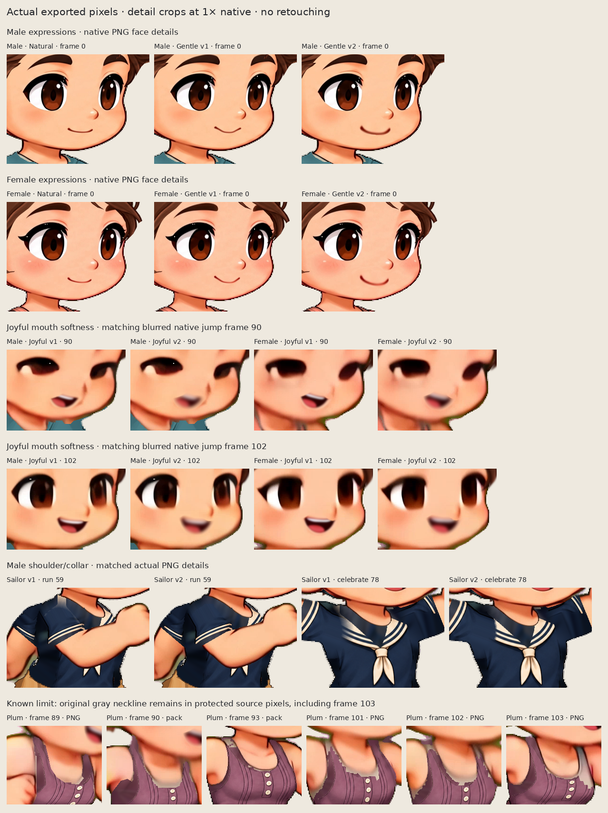

Kling expression and fit review
Same-build comparisons from actual production PNG, GIF and CharacterPack downloads. These eight images are offline review arrangements; they are not additional application exports. Character pixels are not retouched. GIFs use the application's half-native matte export and a shared review palette; original download links preserve the untouched bytes.
Natural remains the original source face. Gentle v1 and Joyful v1 remain available beside the additive v2 choices. Old banks and saved-project bytes stay intact; updating appearance requires the existing explicit copy flow. Original celebration laughter remains source artwork.
Native pixels and the remaining neckline limit
The same actual face, shoulder and neckline crops are available at native size and integer 2×. Frame 103 is shown alongside 89, 90, 93, 101 and 102: original gray neckline fragments remain where the source protection contract blocks new cloth. The right-neck/chest wedge and its angular transition are particularly visible at frame 103. Some legacy shoulder/boundary flecks also remain. These are visible limitations of the additive plum review garment; the neckline is not claimed fixed.
Open native 1× board · Open integer 2× board

Original PNG and CharacterPack crop inputs
Actual exports and saved projects
All three packs were exported after an exact project reopen and loaded in a separate player after the editors closed. Download links below are original artifacts, separate from the review montages.